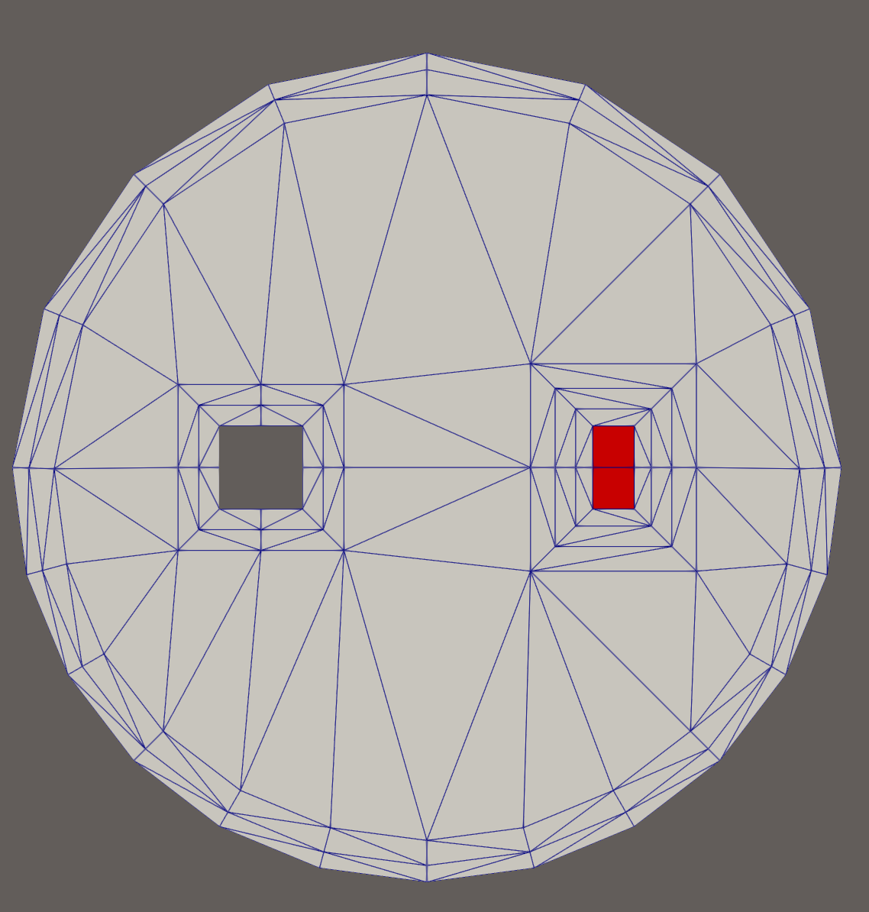

- boundaryThe input MeshGenerator defining the output outer boundary and required Steiner points.
C++ Type:MeshGeneratorName
Controllable:No
Description:The input MeshGenerator defining the output outer boundary and required Steiner points.
XYDelaunayGenerator
Triangulates meshes within boundaries defined by input meshes.
Input Meshes
An input mesh will be used to define the outer boundary of the generated output mesh, as well as to specify any Steiner points interior to that boundary which must be included in as output mesh vertices. Additional interior vertices can be automatically generated by specifying a desired triangle area (either as a constant or as a function of triangle center location that can be specified or automatically generated). Additional interior boundary "holes" can be specified by the mesh generators specified in the "holes" vector parameter. Additional interior vertices can also be specified using "interior_points". This is useful when specific interior nodal locations need to be defined. Note that enabling "smooth_triangulation" will shift these specified points.
Each input mesh, as specified in the "boundary" parameter and optionally in the "holes" parameter, can define a ring of boundary segments either by including edge elements for each segment or by including face elements whose external edges are to be treated as segments. For the outer "boundary" mesh, a subset of edges or faces can be examined instead of the entire mesh, using the "input_subdomain_names" parameter to list edge element subdomains or the "input_boundary_names" parameter to list face boundaries.
If multiple boundary rings exist in a mesh, only the ring enclosing the rest of the mesh is considered to be "the" boundary. Input meshes which are not simply connected, which therefore have multiple outer boundary rings, are not yet supported.
If the input boundary mesh has nodes inside the boundary ring, these nodes are treated as required in the output mesh. This is useful for ensuring that the output mesh has a vertex at a specific point of interest. For meshes with interior nodes that should not be considered required, a user can first use a LowerDBlockFromSidesetGenerator to generate the desired boundary ring and a BlockDeletionGenerator on that to remove everything except the desired boundary edges. Setting "delete_exteriors" to false is necessary in this workflow to prevent the new edge elements from being deleted along with their interior-parent elements.
Using stitching options, meshes used as "holes" can subsequently be stitched into those portions of the output mesh. For this use case some care may be required: refinement of stitched hole boundaries should be disallowed so that the boundary nodes in the newly triangulated mesh still precisely match the boundary nodes in the hole mesh.
Interior vertices can be adjusted after mesh generation using the "smooth_triangulation" parameter, to produce a more "smooth" mesh, but currently the only mesh smoother option is a simple Laplacian smoother; this can have unwanted side-effects on meshes with concave boundaries or poor nodal valences, and so it is disabled by default for robustness.
Elements Size Control
The elements generated by XYDelaunayGenerator can be refined according to a given maximum element area. This element area limit can be provided using one of the following three approaches:
A uniform area defined by "desired_area".
A parsed space-dependent area function defined by "desired_area_func".
An automatically generated area function calculated based on inverse distance interpolation of the
EDGEelement size of the external and holes boundaries with an option to include a background value for those regions away from those boundaries. This feature is enabled by "use_auto_area_func", while the related parameters include "auto_area_func_default_size", "auto_area_func_default_size_dist", "auto_area_function_num_points", and "auto_area_function_power".

Figure 1: Examples of using different element area limiting options.
A detailed comparison is made in Figure 1, using a 1 meter radius circular external boundary with 8 EDGE elements in its upper half and 16 in its lower half, and two squares with 0.2 meter side length with different EDGE element sizes as the hole boundaries.
Boundary Layers Options
Boundary layers can be generated around both the outer boundary and holes by specifying the related parameters, including "outer_boundary_layer_thickness", "outer_boundary_layer_num", "outer_boundary_layer_bias", "holes_boundary_layer_thickness", "holes_boundary_layer_num", and "holes_boundary_layer_bias", respectively. These parameters allow users to specify the thickness, number of layers, and bias for the layer thickness of both the outer boundary and holes. It is worth noting that all the hole related parameters are vectors, so that users can specify different boundary layer options for each hole mesh. The bias is defined as the element thickness (in the boundary normal direction) growth factor for each subsequent layer.
Examples
Using instances of the PolyLineMeshGenerator to create a boundary and a few holes, followed by a XYDelaunayGenerator object to triangulate the region between them, the Mesh block shown in the input file snippet below generates the final mesh shown in Figure 2.
For this example a specified fixed interpolation of boundary edges is used, but refinement to a desired maximum triangle size allows automatic placement of nodes in the mesh interior.
[Mesh<<<{"href": "../../syntax/Mesh/index.html"}>>>]
[outer_bdy]
type = PolyLineMeshGenerator<<<{"description": "Generates meshes from edges connecting a list of points.", "href": "PolyLineMeshGenerator.html"}>>>
points<<<{"description": "The points defining the polyline, in order"}>>> = '-1.0 0.0 0.0
0.0 -1.0 0.0
1.0 0.0 0.0
0.0 2.0 0.0'
loop<<<{"description": "Whether edges should form a closed loop"}>>> = true
[]
[hole_1]
type = PolyLineMeshGenerator<<<{"description": "Generates meshes from edges connecting a list of points.", "href": "PolyLineMeshGenerator.html"}>>>
points<<<{"description": "The points defining the polyline, in order"}>>> = '-0.5 -0.1 0.0
-0.3 -0.1 0.0
-0.3 0.1 0.0
-0.5 0.1 0.0'
loop<<<{"description": "Whether edges should form a closed loop"}>>> = true
[]
[hole_2]
type = PolyLineMeshGenerator<<<{"description": "Generates meshes from edges connecting a list of points.", "href": "PolyLineMeshGenerator.html"}>>>
points<<<{"description": "The points defining the polyline, in order"}>>> = '0.3 -0.1 0.0
0.5 -0.1 0.0
0.5 0.1 0.0
0.3 0.1 0.0'
loop<<<{"description": "Whether edges should form a closed loop"}>>> = true
[]
[triang]
type = XYDelaunayGenerator<<<{"description": "Triangulates meshes within boundaries defined by input meshes.", "href": "XYDelaunayGenerator.html"}>>>
boundary<<<{"description": "The input MeshGenerator defining the output outer boundary and required Steiner points."}>>> = 'outer_bdy'
holes<<<{"description": "The MeshGenerators that define mesh holes."}>>> = 'hole_1
hole_2'
add_nodes_per_boundary_segment<<<{"description": "How many more nodes to add in each outer boundary segment."}>>> = 3
refine_boundary<<<{"description": "Whether to allow automatically refining the outer boundary."}>>> = false
desired_area<<<{"description": "Desired (maximum) triangle area, or 0 to skip uniform refinement"}>>> = 0.05
[]
[]
Figure 2: Resulting triangulated mesh from a polyline boundary and holes.
In the input file snippet below, hole stitching is done recursively, so that each internal "boundary" polyline (after refinement) remains preserved in the final mesh shown in Figure 3.
[Mesh<<<{"href": "../../syntax/Mesh/index.html"}>>>]
[inner_square_sbd_0]
type = GeneratedMeshGenerator<<<{"description": "Create a line, square, or cube mesh with uniformly spaced or biased elements.", "href": "GeneratedMeshGenerator.html"}>>>
dim<<<{"description": "The dimension of the mesh to be generated"}>>> = 2
nx<<<{"description": "Number of elements in the X direction"}>>> = 3
ny<<<{"description": "Number of elements in the Y direction"}>>> = 3
xmin<<<{"description": "Lower X Coordinate of the generated mesh"}>>> = -0.4
xmax<<<{"description": "Upper X Coordinate of the generated mesh"}>>> = 0.4
ymin<<<{"description": "Lower Y Coordinate of the generated mesh"}>>> = -0.4
ymax<<<{"description": "Upper Y Coordinate of the generated mesh"}>>> = 0.4
[]
[inner_square]
type = SubdomainIDGenerator<<<{"description": "Sets all the elements of the input mesh to a unique subdomain ID.", "href": "SubdomainIDGenerator.html"}>>>
input<<<{"description": "The mesh we want to modify"}>>> = inner_square_sbd_0
subdomain_id<<<{"description": "New subdomain IDs of all elements"}>>> = 1 # Exodus dislikes quad ids matching tri ids
[]
[layer_2_bdy]
type = PolyLineMeshGenerator<<<{"description": "Generates meshes from edges connecting a list of points.", "href": "PolyLineMeshGenerator.html"}>>>
points<<<{"description": "The points defining the polyline, in order"}>>> = '-1.0 0.0 0.0
0.0 -1.0 0.0
1.0 0.0 0.0
0.0 1.0 0.0'
loop<<<{"description": "Whether edges should form a closed loop"}>>> = true
[]
[layer_3_bdy]
type = PolyLineMeshGenerator<<<{"description": "Generates meshes from edges connecting a list of points.", "href": "PolyLineMeshGenerator.html"}>>>
points<<<{"description": "The points defining the polyline, in order"}>>> = '-1.5 -1.5 0.0
1.5 -1.5 0.0
1.5 1.5 0.0
-1.5 1.5 0.0'
loop<<<{"description": "Whether edges should form a closed loop"}>>> = true
[]
[layer_4_bdy]
type = PolyLineMeshGenerator<<<{"description": "Generates meshes from edges connecting a list of points.", "href": "PolyLineMeshGenerator.html"}>>>
points<<<{"description": "The points defining the polyline, in order"}>>> = '-4.0 0.0 0.0
0.0 -4.0 0.0
4.0 0.0 0.0
0.0 4.0 0.0'
loop<<<{"description": "Whether edges should form a closed loop"}>>> = true
[]
[triang_2]
type = XYDelaunayGenerator<<<{"description": "Triangulates meshes within boundaries defined by input meshes.", "href": "XYDelaunayGenerator.html"}>>>
boundary<<<{"description": "The input MeshGenerator defining the output outer boundary and required Steiner points."}>>> = 'layer_2_bdy'
holes<<<{"description": "The MeshGenerators that define mesh holes."}>>> = 'inner_square'
stitch_holes<<<{"description": "Whether to stitch to the mesh defining each hole."}>>> = 'true'
refine_holes<<<{"description": "Whether to allow automatically refining each hole boundary."}>>> = 'false'
verify_holes<<<{"description": "Verify holes do not intersect boundary or each other. Asymptotically costly."}>>> = false
add_nodes_per_boundary_segment<<<{"description": "How many more nodes to add in each outer boundary segment."}>>> = 2
refine_boundary<<<{"description": "Whether to allow automatically refining the outer boundary."}>>> = false
desired_area<<<{"description": "Desired (maximum) triangle area, or 0 to skip uniform refinement"}>>> = 0.05
[]
[triang_3]
type = XYDelaunayGenerator<<<{"description": "Triangulates meshes within boundaries defined by input meshes.", "href": "XYDelaunayGenerator.html"}>>>
boundary<<<{"description": "The input MeshGenerator defining the output outer boundary and required Steiner points."}>>> = 'layer_3_bdy'
holes<<<{"description": "The MeshGenerators that define mesh holes."}>>> = 'triang_2'
stitch_holes<<<{"description": "Whether to stitch to the mesh defining each hole."}>>> = 'true'
refine_holes<<<{"description": "Whether to allow automatically refining each hole boundary."}>>> = 'false'
add_nodes_per_boundary_segment<<<{"description": "How many more nodes to add in each outer boundary segment."}>>> = 2
refine_boundary<<<{"description": "Whether to allow automatically refining the outer boundary."}>>> = false
desired_area<<<{"description": "Desired (maximum) triangle area, or 0 to skip uniform refinement"}>>> = 0.1
[]
[triang_4]
type = XYDelaunayGenerator<<<{"description": "Triangulates meshes within boundaries defined by input meshes.", "href": "XYDelaunayGenerator.html"}>>>
boundary<<<{"description": "The input MeshGenerator defining the output outer boundary and required Steiner points."}>>> = 'layer_4_bdy'
holes<<<{"description": "The MeshGenerators that define mesh holes."}>>> = 'triang_3'
stitch_holes<<<{"description": "Whether to stitch to the mesh defining each hole."}>>> = 'true'
refine_holes<<<{"description": "Whether to allow automatically refining each hole boundary."}>>> = 'false'
verify_holes<<<{"description": "Verify holes do not intersect boundary or each other. Asymptotically costly."}>>> = false
add_nodes_per_boundary_segment<<<{"description": "How many more nodes to add in each outer boundary segment."}>>> = 2
refine_boundary<<<{"description": "Whether to allow automatically refining the outer boundary."}>>> = true
desired_area<<<{"description": "Desired (maximum) triangle area, or 0 to skip uniform refinement"}>>> = 0.2
[]
[]
Figure 3: Resulting triangulated mesh with nested polyline boundaries and an internal grid.
The following example shows how boundary layers can be generated. A boundary layer consisting of two element layers with a bias of 1.5 is generated around the outer boundary. Two boundary layers with different thicknesses, numbers of layers, and biases are generated around the two holes, respectively. One hole mesh is also stitched to the generated mesh. The resulting mesh is shown in Figure 4.
[Mesh<<<{"href": "../../syntax/Mesh/index.html"}>>>]
[outer_bdy]
type = ParsedCurveGenerator<<<{"description": "This ParsedCurveGenerator object is designed to generate a mesh of a curve that consists of EDGE2, EDGE3, or EDGE4 elements.", "href": "ParsedCurveGenerator.html"}>>>
x_formula<<<{"description": "Function expression of x(t)"}>>> = 'r*cos(t)'
y_formula<<<{"description": "Function expression of y(t)"}>>> = 'r*sin(t)'
section_bounding_t_values<<<{"description": "The 't' values that bound the sections of the curve. Start and end points must be included. The number of entries in 'nums_segments' should be equal to one less than the number of entries in this parameter."}>>> = '${fparse 0.0} ${fparse pi} ${fparse 2.0*pi}'
constant_names<<<{"description": "Vector of constants used in the parsed function (use this for kB etc.)"}>>> = 'r'
constant_expressions<<<{"description": "Vector of values for the constants in constant_names (can be an FParser expression)"}>>> = '1.0'
nums_segments<<<{"description": "Numbers of segments (EDGE elements) of each section of the curve to be generated. The number of entries in this parameter should be equal to one less than the number of entries in 'section_bounding_t_values'"}>>> = '8 12'
is_closed_loop<<<{"description": "Whether the curve is closed or not."}>>> = true
[]
[hole_1]
type = PolyLineMeshGenerator<<<{"description": "Generates meshes from edges connecting a list of points.", "href": "PolyLineMeshGenerator.html"}>>>
points<<<{"description": "The points defining the polyline, in order"}>>> = '-0.5 -0.1 0.0
-0.3 -0.1 0.0
-0.3 0.1 0.0
-0.5 0.1 0.0'
loop<<<{"description": "Whether edges should form a closed loop"}>>> = true
nums_edges_between_points<<<{"description": "How many Edge elements to build between each point pair. If a single value is given, it is applied to all segments. Otherwise, the number of entries must match the number of segments."}>>> = 2
[]
[hole_2]
type = GeneratedMeshGenerator<<<{"description": "Create a line, square, or cube mesh with uniformly spaced or biased elements.", "href": "GeneratedMeshGenerator.html"}>>>
dim<<<{"description": "The dimension of the mesh to be generated"}>>> = 2
nx<<<{"description": "Number of elements in the X direction"}>>> = 1
ny<<<{"description": "Number of elements in the Y direction"}>>> = 2
xmin<<<{"description": "Lower X Coordinate of the generated mesh"}>>> = 0.4
xmax<<<{"description": "Upper X Coordinate of the generated mesh"}>>> = 0.5
ymin<<<{"description": "Lower Y Coordinate of the generated mesh"}>>> = -0.1
ymax<<<{"description": "Upper Y Coordinate of the generated mesh"}>>> = 0.1
[]
[xyd]
type = XYDelaunayGenerator<<<{"description": "Triangulates meshes within boundaries defined by input meshes.", "href": "XYDelaunayGenerator.html"}>>>
boundary<<<{"description": "The input MeshGenerator defining the output outer boundary and required Steiner points."}>>> = outer_bdy
outer_boundary_layer_thickness<<<{"description": "Thickness of the outer boundary layer to be added."}>>> = 0.1
outer_boundary_layer_num<<<{"description": "Number of layers for the outer boundary layer."}>>> = 2
outer_boundary_layer_bias<<<{"description": "Bias factor for the thickness of each layer in the outer boundary layer."}>>> = 1.5
holes_boundary_layer_thickness<<<{"description": "Thickness of the hole boundary layers to be added."}>>> = '0.1 0.15'
holes_boundary_layer_num<<<{"description": "Numbers of layers for the hole boundary layers."}>>> = '2 3'
holes_boundary_layer_bias<<<{"description": "Bias factors for the thickness of each layer in the hole boundary layers."}>>> = '1.0 1.2'
refine_boundary<<<{"description": "Whether to allow automatically refining the outer boundary."}>>> = false
stitch_holes<<<{"description": "Whether to stitch to the mesh defining each hole."}>>> = 'false true'
refine_holes<<<{"description": "Whether to allow automatically refining each hole boundary."}>>> = 'false false'
holes<<<{"description": "The MeshGenerators that define mesh holes."}>>> = 'hole_1 hole_2'
verify_holes<<<{"description": "Verify holes do not intersect boundary or each other. Asymptotically costly."}>>> = false
output_subdomain_id<<<{"description": "Subdomain id to set on new triangles."}>>> = 1
output_subdomain_name<<<{"description": "Subdomain name to set on new triangles."}>>> = 'tri'
[]
[]
Figure 4: Resulting triangulated mesh with boundary layers generated around both the outer boundary and holes.
Input Parameters
- add_nodes_per_boundary_segment0How many more nodes to add in each outer boundary segment.
Default:0
C++ Type:unsigned int
Controllable:No
Description:How many more nodes to add in each outer boundary segment.
- algorithmBINARYControl the use of binary search for the nodes of the stitched surfaces.
Default:BINARY
C++ Type:MooseEnum
Controllable:No
Description:Control the use of binary search for the nodes of the stitched surfaces.
- desired_area0Desired (maximum) triangle area, or 0 to skip uniform refinement
Default:0
C++ Type:Real
Unit:(no unit assumed)
Range:desired_area>=0
Controllable:No
Description:Desired (maximum) triangle area, or 0 to skip uniform refinement
- desired_area_funcDesired area as a function of x,y; omit to skip non-uniform refinement
C++ Type:std::string
Controllable:No
Description:Desired area as a function of x,y; omit to skip non-uniform refinement
- hole_boundariesBoundary names to set on holes. Default IDs are numbered up from 1 if no hole meshes are stitched; or from maximum boundary ID of all the stitched hole meshes + 2.
C++ Type:std::vector<BoundaryName>
Controllable:No
Description:Boundary names to set on holes. Default IDs are numbered up from 1 if no hole meshes are stitched; or from maximum boundary ID of all the stitched hole meshes + 2.
- holesThe MeshGenerators that define mesh holes.
C++ Type:std::vector<MeshGeneratorName>
Controllable:No
Description:The MeshGenerators that define mesh holes.
- input_boundary_names2D-input-mesh boundaries defining the output mesh outer boundary
C++ Type:std::vector<BoundaryName>
Controllable:No
Description:2D-input-mesh boundaries defining the output mesh outer boundary
- input_subdomain_names1D-input-mesh subdomains defining the output mesh outer boundary
C++ Type:std::vector<SubdomainName>
Controllable:No
Description:1D-input-mesh subdomains defining the output mesh outer boundary
- max_angle_deviation60Maximum angle deviation from the global average normal vector in the input mesh.
Default:60
C++ Type:Real
Unit:(no unit assumed)
Range:max_angle_deviation>0 & max_angle_deviation<90
Controllable:No
Description:Maximum angle deviation from the global average normal vector in the input mesh.
- output_boundaryBoundary name to set on new outer boundary. Default ID: 0 if no hole meshes are stitched; or maximum boundary ID of all the stitched hole meshes + 1.
C++ Type:BoundaryName
Controllable:No
Description:Boundary name to set on new outer boundary. Default ID: 0 if no hole meshes are stitched; or maximum boundary ID of all the stitched hole meshes + 1.
- output_subdomain_idSubdomain id to set on new triangles.
C++ Type:unsigned short
Controllable:No
Description:Subdomain id to set on new triangles.
- output_subdomain_nameSubdomain name to set on new triangles.
C++ Type:SubdomainName
Controllable:No
Description:Subdomain name to set on new triangles.
- refine_boundaryTrueWhether to allow automatically refining the outer boundary.
Default:True
C++ Type:bool
Controllable:No
Description:Whether to allow automatically refining the outer boundary.
- refine_holesWhether to allow automatically refining each hole boundary.
C++ Type:std::vector<bool>
Controllable:No
Description:Whether to allow automatically refining each hole boundary.
- smooth_triangulationFalseWhether to do Laplacian mesh smoothing on the generated triangles.
Default:False
C++ Type:bool
Controllable:No
Description:Whether to do Laplacian mesh smoothing on the generated triangles.
- stitch_holesWhether to stitch to the mesh defining each hole.
C++ Type:std::vector<bool>
Controllable:No
Description:Whether to stitch to the mesh defining each hole.
- tri_element_typeDEFAULTType of the triangular elements to be generated.
Default:DEFAULT
C++ Type:MooseEnum
Controllable:No
Description:Type of the triangular elements to be generated.
- verboseFalseWhether the generator should output additional information
Default:False
C++ Type:bool
Controllable:No
Description:Whether the generator should output additional information
- verbose_stitchingFalseWhether mesh stitching should have verbose output.
Default:False
C++ Type:bool
Controllable:No
Description:Whether mesh stitching should have verbose output.
- verify_holesTrueVerify holes do not intersect boundary or each other. Asymptotically costly.
Default:True
C++ Type:bool
Controllable:No
Description:Verify holes do not intersect boundary or each other. Asymptotically costly.
Optional Parameters
- auto_area_func_default_size0Background size for automatic area function, or 0 to use non background size
Default:0
C++ Type:Real
Unit:(no unit assumed)
Controllable:No
Description:Background size for automatic area function, or 0 to use non background size
- auto_area_func_default_size_dist-1Effective distance of background size for automatic area function, or negative to use non background size
Default:-1
C++ Type:Real
Unit:(no unit assumed)
Controllable:No
Description:Effective distance of background size for automatic area function, or negative to use non background size
- auto_area_function_num_points10Maximum number of nearest points used for the inverse distance interpolation algorithm for automatic area function calculation.
Default:10
C++ Type:unsigned int
Controllable:No
Description:Maximum number of nearest points used for the inverse distance interpolation algorithm for automatic area function calculation.
- auto_area_function_power1Polynomial power of the inverse distance interpolation algorithm for automatic area function calculation.
Default:1
C++ Type:Real
Unit:(no unit assumed)
Range:auto_area_function_power>0
Controllable:No
Description:Polynomial power of the inverse distance interpolation algorithm for automatic area function calculation.
- use_auto_area_funcFalseUse the automatic area function for the triangle meshing region.
Default:False
C++ Type:bool
Controllable:No
Description:Use the automatic area function for the triangle meshing region.
Automatic Triangle Meshing Area Control Parameters
- enableTrueSet the enabled status of the MooseObject.
Default:True
C++ Type:bool
Controllable:No
Description:Set the enabled status of the MooseObject.
- save_with_nameKeep the mesh from this mesh generator in memory with the name specified
C++ Type:std::string
Controllable:No
Description:Keep the mesh from this mesh generator in memory with the name specified
Advanced Parameters
- holes_boundary_layer_biasBias factors for the thickness of each layer in the hole boundary layers.
C++ Type:std::vector<Real>
Unit:(no unit assumed)
Range:holes_boundary_layer_bias>0
Controllable:No
Description:Bias factors for the thickness of each layer in the hole boundary layers.
- holes_boundary_layer_numNumbers of layers for the hole boundary layers.
C++ Type:std::vector<unsigned int>
Controllable:No
Description:Numbers of layers for the hole boundary layers.
- holes_boundary_layer_thicknessThickness of the hole boundary layers to be added.
C++ Type:std::vector<Real>
Unit:(no unit assumed)
Range:holes_boundary_layer_thickness>=0
Controllable:No
Description:Thickness of the hole boundary layers to be added.
- outer_boundary_layer_bias1Bias factor for the thickness of each layer in the outer boundary layer.
Default:1
C++ Type:Real
Unit:(no unit assumed)
Range:outer_boundary_layer_bias>0
Controllable:No
Description:Bias factor for the thickness of each layer in the outer boundary layer.
- outer_boundary_layer_num0Number of layers for the outer boundary layer.
Default:0
C++ Type:unsigned int
Controllable:No
Description:Number of layers for the outer boundary layer.
- outer_boundary_layer_thickness0Thickness of the outer boundary layer to be added.
Default:0
C++ Type:Real
Unit:(no unit assumed)
Range:outer_boundary_layer_thickness>=0
Controllable:No
Description:Thickness of the outer boundary layer to be added.
Boundary Layer Parameters
- interior_point_filesText file(s) with the interior points, one per line
C++ Type:std::vector<FileName>
Controllable:No
Description:Text file(s) with the interior points, one per line
- interior_pointsInterior node locations, if no smoothing is used. Any point outside the surface will not be meshed.
C++ Type:std::vector<libMesh::Point>
Controllable:No
Description:Interior node locations, if no smoothing is used. Any point outside the surface will not be meshed.
Mandatory Mesh Interior Nodes Parameters
- nemesisFalseWhether or not to output the mesh file in the nemesisformat (only if output = true)
Default:False
C++ Type:bool
Controllable:No
Description:Whether or not to output the mesh file in the nemesisformat (only if output = true)
- outputFalseWhether or not to output the mesh file after generating the mesh
Default:False
C++ Type:bool
Controllable:No
Description:Whether or not to output the mesh file after generating the mesh
- show_infoFalseWhether or not to show mesh info after generating the mesh (bounding box, element types, sidesets, nodesets, subdomains, etc)
Default:False
C++ Type:bool
Controllable:No
Description:Whether or not to show mesh info after generating the mesh (bounding box, element types, sidesets, nodesets, subdomains, etc)